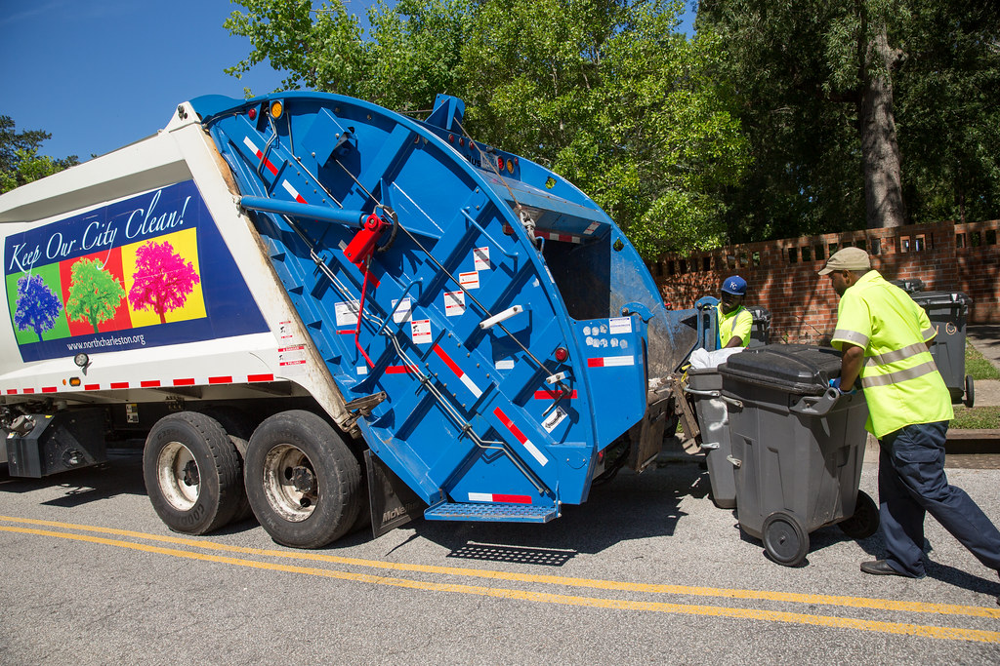

Lingkungan bersih, dimulai dari rumah.
Tidak perlu bingung kapan sampah diangkut. Atur layanan pengangkutan rutin yang praktis, jelas, dan lebih peduli pada lingkungan.

Foto: North Charleston · CC BY-SA 2.0Apakah area kamu sudah terlayani?
Isi nama perumahan dan kota. Untuk MVP, tim kami akan mengonfirmasi cakupan layanan langsung melalui WhatsApp.
Belum ada database area otomatis? Tidak masalah — tim kami akan membantu mengecek secara manual.
Tiga langkah menuju lingkungan bersih
Proses awal dibuat sederhana agar warga bisa mulai tanpa harus mengunduh aplikasi.
Cek area kamu
Masukkan nama perumahan dan kota untuk memastikan layanan tersedia di lingkunganmu.
Pilih layanan
Diskusikan frekuensi pengangkutan, alamat penjemputan, dan biaya bersama tim kami.
Mulai berlangganan
Dapatkan konfirmasi jadwal dari tim. Jika ada kendala, kamu bisa langsung menghubungi WhatsApp.
Pengelolaan sampah yang lebih terarah
Mulai dari pengangkutan rutin hingga edukasi sederhana yang bisa dilakukan dari rumah.
Pengangkutan rutin
Bantu rumah tangga menjaga kebersihan dengan jadwal angkut yang dikonfirmasi oleh tim layanan.
Informasi jadwal
Ketahui jadwal pengangkutan area kamu dan koordinasikan perubahan dengan lebih mudah.
Bantuan via WhatsApp
Tanyakan layanan, laporkan sampah belum terangkut, atau konsultasikan kebutuhan khusus.
Sampah yang dipilah punya peluang baru.
Pengelolaan yang tepat bisa membantu mengurangi sampah tercampur dan membuka peluang pemanfaatan kembali.
- ✓ Kenali jenis sampah sebelum dibuang.
- ✓ Pisahkan organik, anorganik, dan residu.
- ✓ Dukung kompos dan daur ulang sesuai fasilitas lokal.
Mulai dengan kebutuhan rumahmu
Harga dan frekuensi final dikonfirmasi sesuai area, rute, dan operasional layanan.
Langganan Rumah Tangga
MVP PILOTPenawaran bulanan sesuai area layanan
- ✓ Konfirmasi jadwal pengangkutan rutin
- ✓ Koordinasi langsung melalui WhatsApp
- ✓ Informasi pemilahan sampah rumah tangga
- ✓ Bantuan untuk pertanyaan atau kendala
Harga, hari angkut, dan cakupan dikonfirmasi sebelum berlangganan.
Yang sering ingin diketahui
Belum menemukan jawaban? Tim kami siap membantu lewat WhatsApp.
Bagaimana cara mengetahui area saya terlayani?
Isi nama perumahan dan kota di bagian Cek Area. Untuk MVP, permintaan akan dikirim ke WhatsApp tim agar cakupan layanan bisa dikonfirmasi secara manual.
Berapa biaya langganan setiap bulan?
Harga belum ditetapkan dalam halaman demo ini. Tim akan memberi penawaran berdasarkan area, frekuensi angkut, dan kebutuhan operasional.
Bagaimana jika sampah saya belum diangkut?
Hubungi tim melalui tombol WhatsApp dan sampaikan nama, alamat, serta tanggal pengangkutan agar kendala dapat ditindaklanjuti.
Apakah sampah perlu dipilah terlebih dahulu?
Pemilahan sangat dianjurkan. Pisahkan organik, anorganik, dan residu sesuai arahan petugas serta fasilitas pengelolaan di area kamu.
Apakah saya bisa meminta angkut di luar jadwal?
Silakan tanyakan melalui WhatsApp. Permintaan angkut khusus bergantung pada ketersediaan petugas dan belum menjadi fitur otomatis pada MVP ini.
Tips sederhana untuk rumah yang lebih bersih
Bacaan singkat seputar memilah, mengurangi, dan mengelola sampah dari rumah.
Memilah sampah tidak harus rumit. Cukup sediakan tiga wadah di dapur atau area belakang rumah, lalu biasakan seluruh anggota keluarga membuang sampah sesuai jenisnya.
- Organik: sisa sayur, kulit buah, ampas kopi, dan daun kering. Bisa diolah menjadi kompos.
- Anorganik: botol plastik, kaleng, kardus, dan kertas. Bilas dan keringkan sebelum dikumpulkan.
- Residu: popok, tisu bekas, dan kemasan berlapis yang sulit didaur ulang.
Beri label pada setiap wadah dan letakkan di tempat yang mudah dijangkau. Dalam satu atau dua minggu, kebiasaan ini akan terasa otomatis.
Botol minuman, galon, dan wadah plastik keras umumnya lebih mudah didaur ulang dibanding kantong kresek atau kemasan sachet berlapis. Kaleng aluminium juga bernilai dan bisa didaur ulang berkali-kali.
- Kosongkan dan bilas sisa isi agar tidak berbau.
- Pipihkan botol dan kaleng untuk menghemat ruang.
- Pisahkan tutup botol bila diminta oleh pengelola setempat.
- Kumpulkan kemasan sachet secara terpisah karena penanganannya berbeda.
Jenis yang diterima bisa berbeda di setiap area. Tanyakan ke tim kami lewat WhatsApp untuk panduan di lingkunganmu.
Sampah yang dibuang sembarangan atau menumpuk di lahan terbuka bisa terbawa hujan ke selokan, lalu ke sungai, dan akhirnya ke laut. Plastik yang sampai ke laut sulit terurai dan dapat membahayakan biota laut.
- Pastikan sampah rumah diangkut secara rutin agar tidak menumpuk.
- Jangan membuang sampah ke saluran air atau sungai.
- Kurangi plastik sekali pakai dengan membawa tas dan botol minum sendiri.
- Ajak tetangga ikut memilah agar lingkungan lebih bersih bersama.
Perubahan besar dimulai dari kebiasaan di rumah sendiri.
Yuk, mulai dari lingkungan kita sendiri.
Cek area layanan atau konsultasikan kebutuhan pengangkutan sampahmu sekarang.